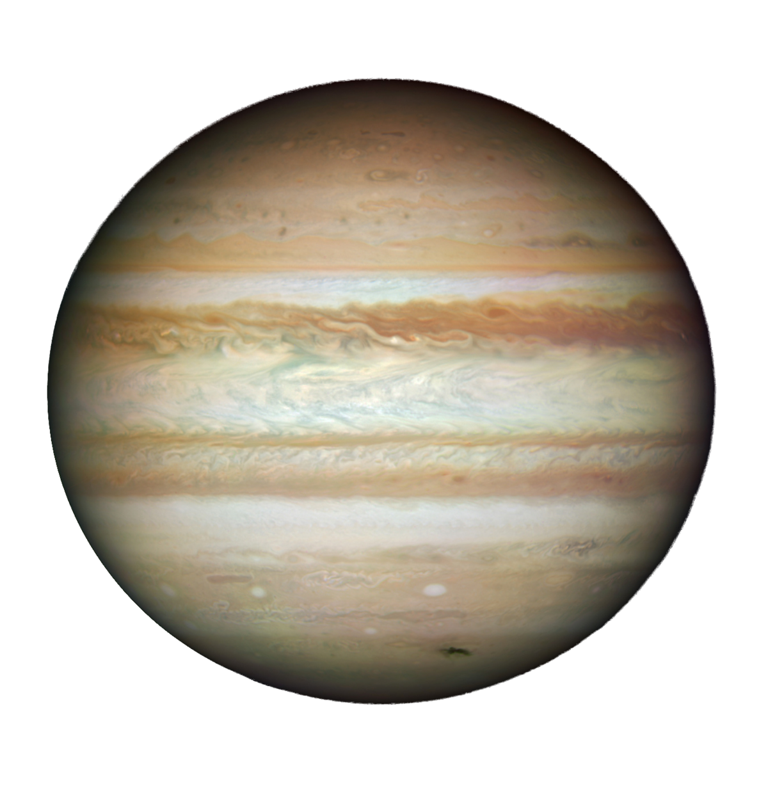

A comparison of key data fields for four planets from the solar system.
| Mars | Jupiter | Saturn | Neptune | |
|---|---|---|---|---|
| Images of Planets | |
 | |
|
| Mass (10^24 kg) | 0.642 | 1898 | 568 | 102 |
| Diameter (km) | 6,792 | 142,984 | 120,536 | 49,528 |
| Distance from Sun (10^6 km) | 228.0 | 778.5 | 1432.0 | 4515.0 |
| Surface Gravity (m/s²) | 3.7 | 23.1 | 9.0 | 11.0 |
| Orbital Period (days) | 687.0 | 4331 | 10,747 | 59,800 |
| Number of Moons | 2 | 95 | 146 | 16 |
| Mean Temperature (°C) | -65 | -110 | -140 | -200 |